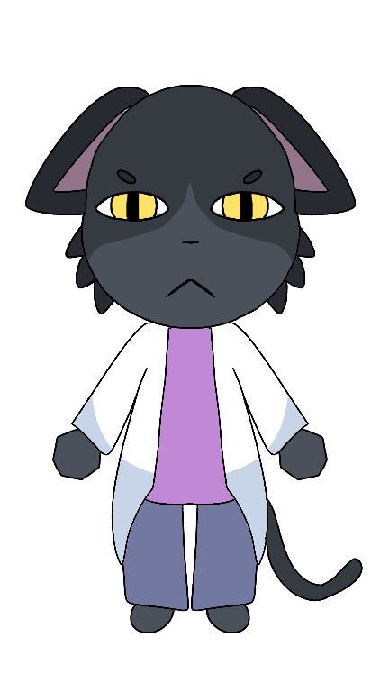

Character Database

| Espécie | Gato |
| Gênero | Masculino |
| Pronomes | Ele/Dele (He/Him) |
| Cargo | Médico-chefe / Supervisor Geral |
| Status | Vivo |
| Primeira Aparição | Turno 1 |
| Local | Andar 3 |
Dr. Fazzy é um gato de pelagem preta, com olhos amarelos penetrantes e interior das orelhas rosa. Usa um jaleco branco sobre uma blusa roxa e calças escuras. Sua postura séria transmite autoridade e experiência.
Dr. Fazzy é o médico-chefe do Animal Hospital e uma das pessoas mais importantes da instituição. Ele supervisiona todos os andares, coordena os funcionários e é responsável pelos casos mais difíceis. Foi ele quem aconselhou Bladz a manter distância da Animal Research Facility. Embora conheça muito sobre as anomalias e sobre a instituição, raramente compartilha essas informações com os demais funcionários. Entre os colegas é conhecido como "Dr. Fazzy", enquanto "Dr. Fazley" costuma ser usado em contextos mais formais.